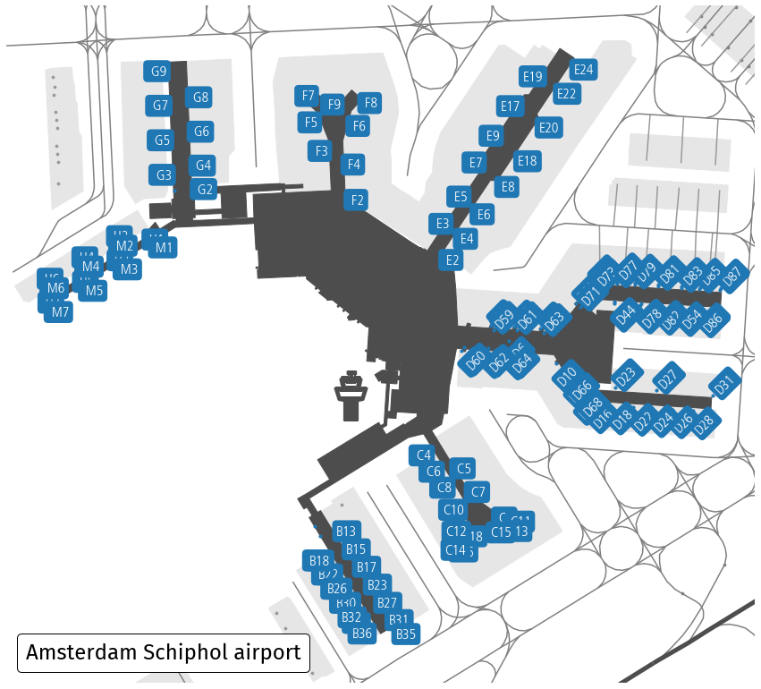

Airport terminal layouts
{kind=link}
Data acquisition
Download nodes, ways and relations with the aeroway tag within area marked with IATA code AMS (Amsterdam airport). The ICAO code (here EHAM) may also be used.
from cartes.osm import Overpass
airport = Overpass.request(area=dict(iata="AMS"), aeroway=True)
Data preprocessing
None
Data visualisation
import matplotlib.pyplot as plt
from matplotlib.offsetbox import AnchoredText
from cartes.crs import Amersfoort, PlateCarree
fig, ax = plt.subplots(
figsize=(15, 15),
subplot_kw=dict(projection=Amersfoort())
)
airport.plot(
ax, by="aeroway",
gate=dict(color="C0"), # change default color for gates to C0 blue
tower=dict(markersize=3000) # enlarge default size
)
ax.spines["geo"].set_visible(False)
# Focus on the terminal area (gates), with a little buffer (in terms of lat/lon degrees)
ax.set_extent(airport.query('aeroway=="gate"'), buffer=1e-3)
# This is about some semi-automatic placement of text labels
def horizontal(name):
if name[0] in "BCMH":
if int(name[-1]) & 1 == 0: return "right"
if name[0] in "EFG":
if int(name[-1]) & 1 == 1: return "right"
return "left"
def vertical(name):
if name[0] in " D":
if int(name[-1]) & 1 == 1: return "bottom"
if name[0] in "MH":
if int(name[-1]) & 1 == 0: return "bottom"
return "top"
style = dict(
transform=PlateCarree(),
color="white", fontsize=16,
fontweight="bold", font="Frutiger", # what else?
bbox=dict(facecolor="C0", edgecolor="none", boxstyle="round"),
)
for _, elt in airport.query('aeroway == "gate"').data.iterrows():
if elt.ref == elt.ref:
ax.text(
elt.longitude, elt.latitude, elt.ref.center(3),
ha=horizontal(elt.ref), va=vertical(elt.ref),
rotation=45 if elt.ref[0] == "D" else 0, **style
)
# Title of the map
text = AnchoredText(
"Amsterdam Schiphol airport",
loc=3,
prop={"size": 24, "fontname": "Fira Sans", },
frameon=True,
)
text.patch.set_boxstyle("round,pad=0.,rounding_size=0.2")
ax.add_artist(text)